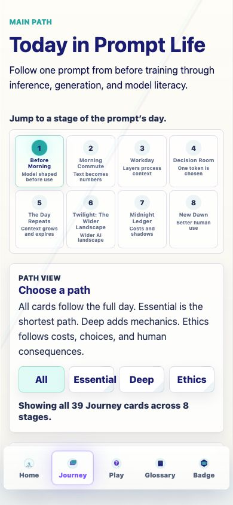
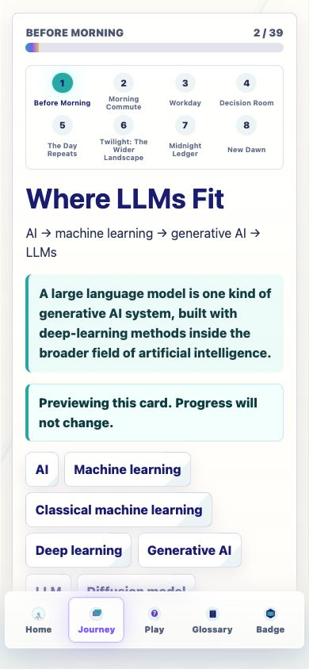
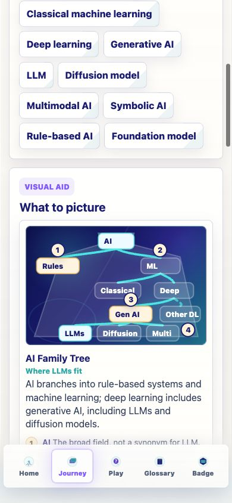
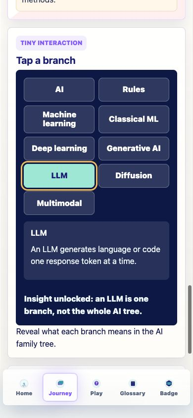
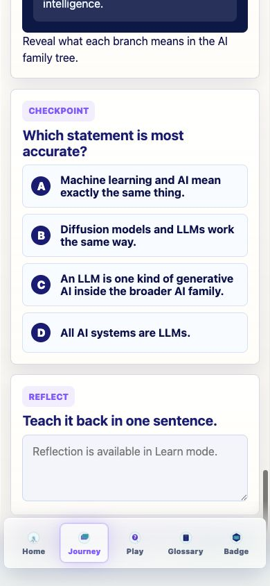
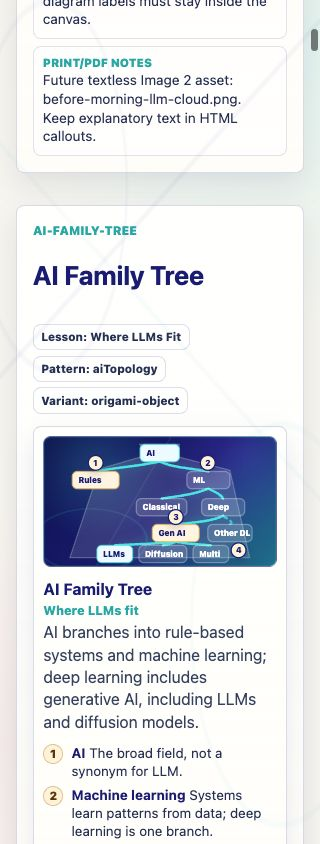
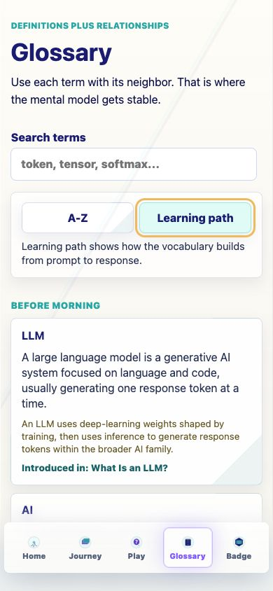
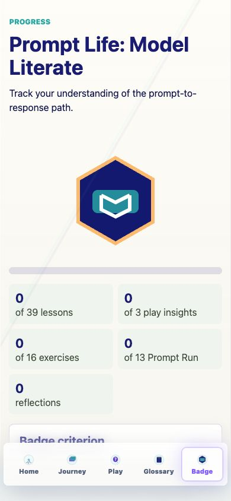

Prompt Life v0.17.2
Where LLMs Fit Report
Date: June 5, 2026
This report wraps the implementation summary and screenshots for the Before Morning topology-card pass.
What Changed
- Bumped the visible app version to
v0.17.2. - Added
Where LLMs FitafterWhat Is an LLM?and beforeRationalists vs Empiricists. - Added a coded SVG / HTML visual aid,
ai-family-tree, with short labels and HTML callouts. - Added the
ai-topologytiny interaction so learners can tap a branch and reveal a one-sentence explanation. - Updated glossary learning-path order and internal review metadata.
- Preserved checkpoint randomization, one badge, existing progress keys, games, and the no-generated-PNG constraint.
Files Changed
src/data/content.tssrc/main.tsxsrc/components/VisualAids.tsxsrc/styles/global.csssrc/data/contentReview.jsdocs/REVIEW_NOTES.mddocs/stage-audits/v0-17-before-morning/README.mddocs/stage-audits/v0-17-before-morning/card-inventory.mddocs/stage-audits/v0-17-before-morning/recommendations.mddocs/stage-audits/v0-17-before-morning/IMPLEMENTATION_REPORT_V0_17_2.mddocs/stage-audits/v0-17-before-morning/screenshot-index.mddocs/stage-audits/v0-17-before-morning/prompt-life-v0-17-2-where-llms-fit-report.htmldocs/stage-audits/v0-17-before-morning/screenshots/v0.17.2 screenshots
New Card Content
Title: Where LLMs Fit
Subtitle: AI → machine learning → generative AI → LLMs
Definition: A large language model is one kind of generative AI system, built with deep-learning methods inside the broader field of artificial intelligence.
Checkpoint: Which statement is most accurate? Correct: An LLM is one kind of generative AI inside the broader AI family.
Visual Aid Behavior
The diagram shows AI branching into rule-based AI and machine learning; machine learning into classical ML and deep learning; deep learning into generative AI and other deep-learning systems; and generative AI into LLMs, diffusion, and multimodal models.
The tiny interaction lets learners tap AI, Rules, Machine learning, Classical ML, Deep learning, Generative AI, LLM, Diffusion, or Multimodal to reveal a short explanation.
Glossary Updates
Added or updated: AI, machine learning, classical machine learning, deep learning, generative AI, LLM, diffusion model, multimodal AI, symbolic AI, rule-based AI, and foundation model.
LLM remains introduced by the first card. The topology terms are introduced by Where LLMs Fit.
Verification
npm run typechecknpm run buildnpm run build:pagesnpm run audit:answersThe new Where LLMs Fit checkpoint is randomized. Preview, Review, and Learn modes were smoke-tested. Browser console errors: none observed.
The build still reports the existing Vite large-chunk warning.
Known Issues
- The existing Vite large-chunk warning remains.
- The new Essential card raises the dynamic Essential lesson denominator; some local progress states may need one more Essential checkpoint.
Image 2 Readiness
Before Morning is ready for Image 2 asset generation. The new topology card should stay coded SVG/HTML for now. The next textless Image 2 candidates remain What Is an LLM?, Pretraining, Fine-Tuning, and Alignment.
Run Locally
npm installnpm run dev -- --host 0.0.0.0- Open
http://localhost:5173/on this computer or the Vite network URL on a phone on the same Wi-Fi.





ai-family-tree visual attached to the new lesson.

